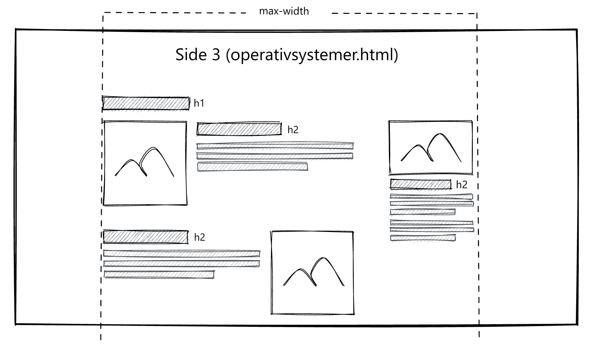
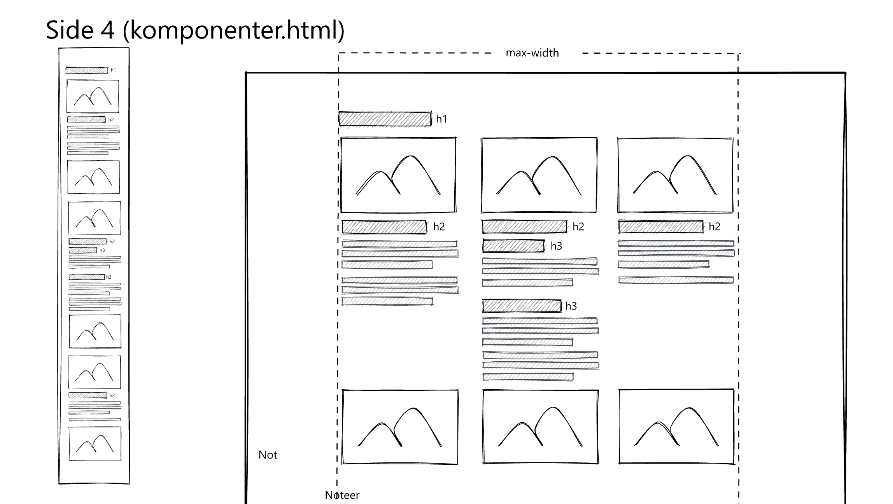
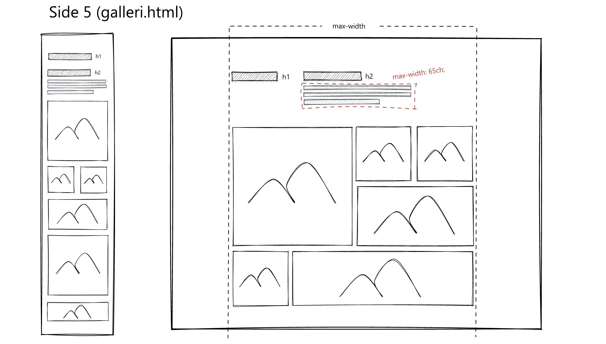
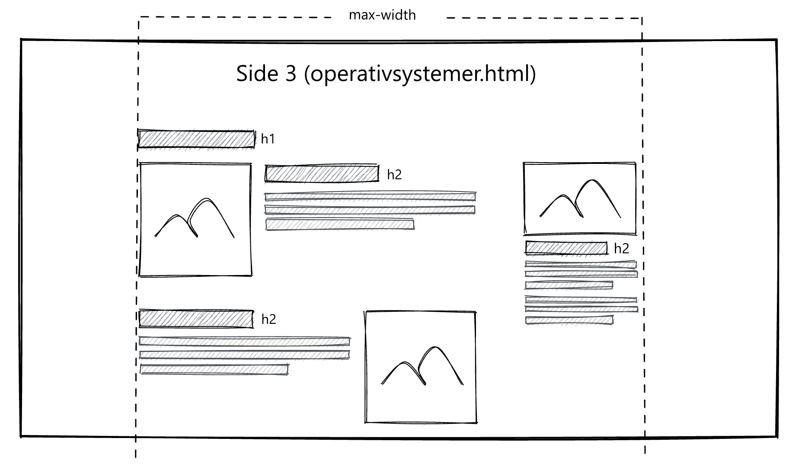
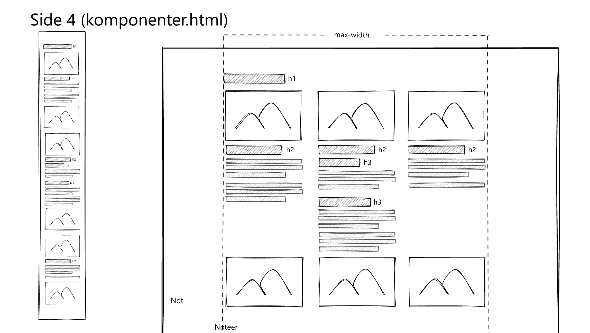
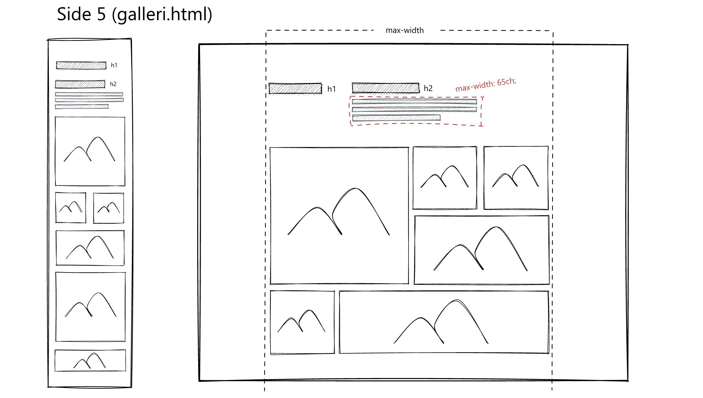

På tema 02 har vi fået en introduktion til grundlæggende webudvikling, herunder HTML og CSS, samt relateret teori, som er vigtig at anvende i praksis ved planlægning af en hjemmeside. Vi har blandt andet lært om moodboards og stilskabeloner som nyttige arbejdsværktøjer, samt undersøgt ophavsrettigheder, stilarter, favicon og designprincipper. I forbindelse med studiestartsprøven har vi først lavet en øvelsesopgave, hvor vi har programmeret en responsiv mobilversion af en hjemmeside. Derefter har vi skulle omdanne mobilsitet til et desktop-format som en del af studiestartsprøven. Vi har kodet og designet hjemmesiden i overensstemmelse med den følgende wireframe.
Desuden har dette tema introduceret os for begreber som brugergrænseflader, digital indholdsproduktion, digital kommunikation og responsivt webdesign. Tema 02 har skabt en grundlæggende forståelse for det fremtidige arbejde som multimediedesigner. Vi har også brugt dette tema til at lære de grundlæggende principper for at oprette en hjemmeside med semantisk struktur samt de grundlæggende begreber inden for grafisk design, Photoshop og Adobe XD. Klik på en af de to links nedenfor for at se det endelige resultat, henholdsvis studiestartsprøven og emnesitet.
 




